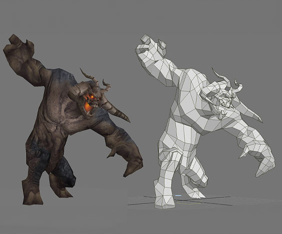

A video game has endless entities around the map. Because of this large amount, an entity cannot have a large number of vertices or complex shapes, therefore it is made to be low-poly, meaning it has a low amount of polygons. Because of this, 3D modellers sculpt a simple shape that just shows the silhouette, but add detail with texturing as shown. This helps the cmoputer that is running the game run it easier, with more fps and at the same time the video game is more accessable to people with weaker setups.
The same techniques apply to human/humanoid/animal creatures. But these 3D models arent low-poly just to avoid a large amount of vertices. They are low-poly to help with animating. It would be much more difficult and glitchy to animate millions of vertices at once and would not be efficient. Instead, 3D modellers create low-poly characters so the characters move and bend at the little seams created. This creates smoother and glitch-free movement in game.
